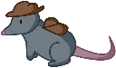
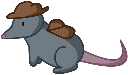

Holly Allen


Fish was developed during a 6-day-long game jam using Unity Engine. The jam's theme was 'creature' and the team completed this aspect by creating a basic fishing simulator.

Hatbird was created during RIT Game Dev Club's Halloween game jam in Unity. The jam lasted 44 total hours and the jam theme was sacrifice. In a team of 3, each member of the group contributed to the overall game elements and design of the game. The majority of my contributions were towards visual design elements in the game. It can be played here.
This project for RIT's Interactive Media Development [IGME 202] class utilizes steering behaviors to move the green cubes. Zombies are randomly placed on the field. All objects in the scene are contained on the field using steering forces. The zombie cubes seek out the player and avoid one another and the white columns on screen. After catching the player, all zombies wander the scene. The user can control the yellow cube and needs to avoid the green cubes on the screen. The game times how long the player can avoid the zombies for. Collisions are tracked using circle collisions. It can be viewed here.
This project is the beginning of a long-term personal project using Autodesk Maya to 3D model a simple teaset covered in mushrooms. Currently, the teapot is a smooth mesh and textured in Autodesk Maya, but in the future the entire project will be fully textured elsewhere. The teapot took 4 hours to complete.
 

Treasure Trot is a simple project built for RIT's Intro to Game Web Tech course [IGME 235] final. It utilizes the PIXI.js library to run the key aspects of the game. The gameplay difficulty increases as the levels progress as more boxes spawn on screen for the player to collect in the same amount of time. I wrote all programs, developed, and created all visual assets. It can be played here.
Using the Open Trivia Database, found here, created a simple web page that generates trivia questions of varying topics and difficulties for the user. Using the API's documentation, I created a website that would allow the user to select what types of questions they wish to answer, and submit the answers they believe to be correct to be scored. The project was created for RIT's Intro to Game Web Tech course [IGME 235]. It can be viewed here.
Apocalypta was created as an academic project for Game Design and Development 1 [IGME 220]. With a team of 4 other students,
Phantom Corridors was created for RIT's Game Design and Algebra Problem Solving 2 [IGME 106] class as a semester-long group project with 5 members. The game was written in C# utilizing the MonoGame open source library. I personally worked on the design, parts of the visual design, documentation, programming architecture, and general programming.